データの前処理
- 今回は新しいデータを使います。JASP_Sample2.csvファイルをダウンロードし、ExcelまたはLibreOfficeなどでで開きます。
- このファイルの中身は以下の通りです
IDPref: 出身都道府県 (番号はISO/JIS番号に従ってます。詳細はネットで検索)Univ: 在学中の大学 (1 = K大学, 2 = O大学)Grade: 学年Sex: 性別 (1 = 女性, 2 = 男性)Tako: たこ焼き器を所有しているか (0 = いいえ; 1 = はい)TakoN: たこ焼きを何個持っているかBlood: 血液型 (1 = A; 2 = B, 3 = O, 4 = AB, 5 = その他、不明)Phone: 使用スマホ (1 = Android, 2 = iPhone)
- クロス表を作成するためには名目変数か順序変数を用いますが、都道府県は名目変数とはいえ、47種類もあるので、今回は「大阪出身か否か」の変数を作成します。
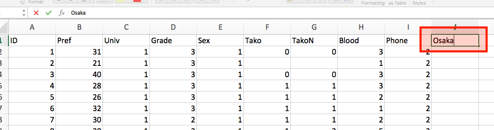
- データの右端に新しい変数名（
Osaka）を作成します。
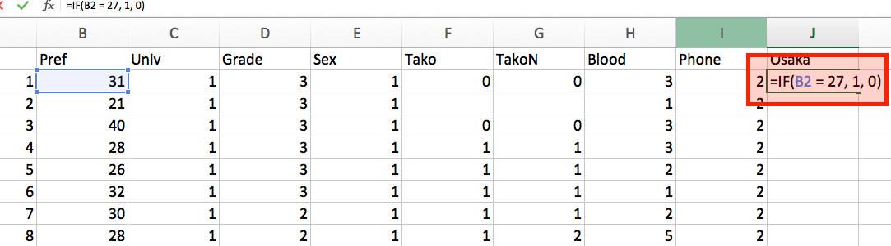
- 下のセルに以下のように入力します。
=IF(B2 = 27, 1, 0)
- これは、「もしB2セルの値が27なら、1を、それ以外の場合は0を表示する」という意味です。ちなみに27は大阪府の番号ですね。
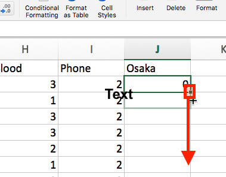
- 同じ数式を何回も書くのは面倒くさいですね。先ほど入力したセル (J2)の右下に小さい「■」がありますね。これをクリックしたままデータの最下段までドラッグします。

- 同じ数式の中で「B2」と書かれている部分だけが修正され、自動的にコピペされます。このまま保存し、JASPで読み込みます。
JASPによる分析
- JASPでファイルを読み込みます。
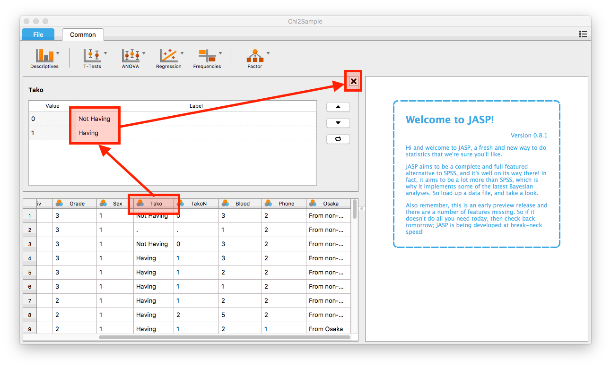
- まずは値ラベルを付けます。ラベルを付ける変数名「
Tako」をクリックしたら、上段にラベル作成の画面が出てきますね。ここで「0 = Not Having」、「1 = Having」と入力し、「X」をクリックします。 - 同じく「
Osaka」変数も「0 = From non-Osaka」、「1 = From Osaka」のラベルを付けます。
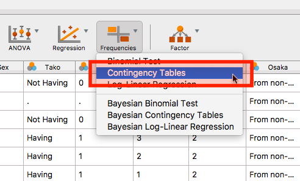
- 分析メニュの「Frequencies」→「Contingency Tables」をクリックします。
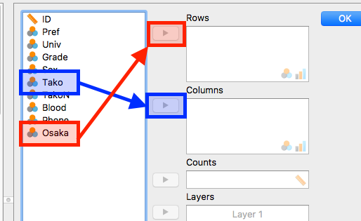
- 行と列に入る変数を選択します。ここでは「
Tako」は「Columns (列)」へ、「Osaka」は「Rows (行)」へ入れます。- 行と列を逆に入れても問題ありません。自分が見やすい表になるように、色々試してみましょう。
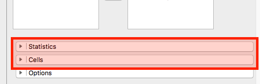
- つづいて、下段の「Statistics」と「Cells」をクリックします。
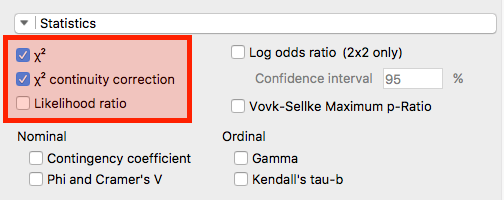
- まずは「Statistics」からです。ここでは「χ2(カイ二乗統計量)」と「χ2 continuity correction (連続補正)」にチェックをします。通常、2 x 2のクロス表の場合は、連続補正された統計量で解釈した方が望ましいと言われています。
- ちなみに、JASP 0.8.1ではFisherの直接法 (exact test)の結果は表示されません。
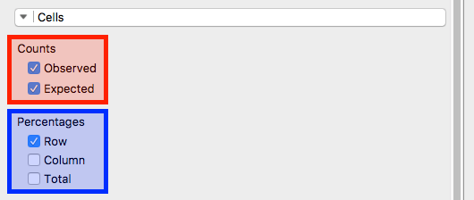
- つづいて、「Cell」画面です。
- ここではCountsの「Observed」と「Expected」を選択します。それぞれ、「観測値」と「期待値」を意味します。
- Percentagesでは「Row」のみチェックをしました。もし、行単位だけでなく、列単位の割合も見たい場合は「Column」、全体における割合なら「Total」にチェックします。解釈しやすくなるよう、自分で試してみてください。
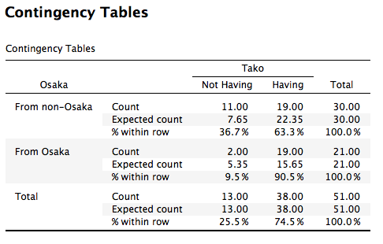
- これがクロス表です。全体的に大阪出身の方がたこ焼き器を持っている傾向が見えますね。この「出身地とたこ焼き器の有無」の関係は統計的に有意な関係でしょうか。
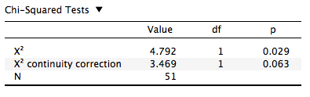
- 下に表示される表がカイ二乗検定の結果です。今回は2 x 2のクロス表なので連続補正 (χ2 continuity correction)のp値をみたら0.063でした。一般的に使われる有意水準 (= 0.05)より大きいので
-
「出身地とたこ焼き器の有無は連関しているとは言えない」
- という結果になります。
- むろん、単純なχ2統計量を基準にした場合は、統計的に有意な連関が見られますね。どっちを見るかは分析者の責任です。
-